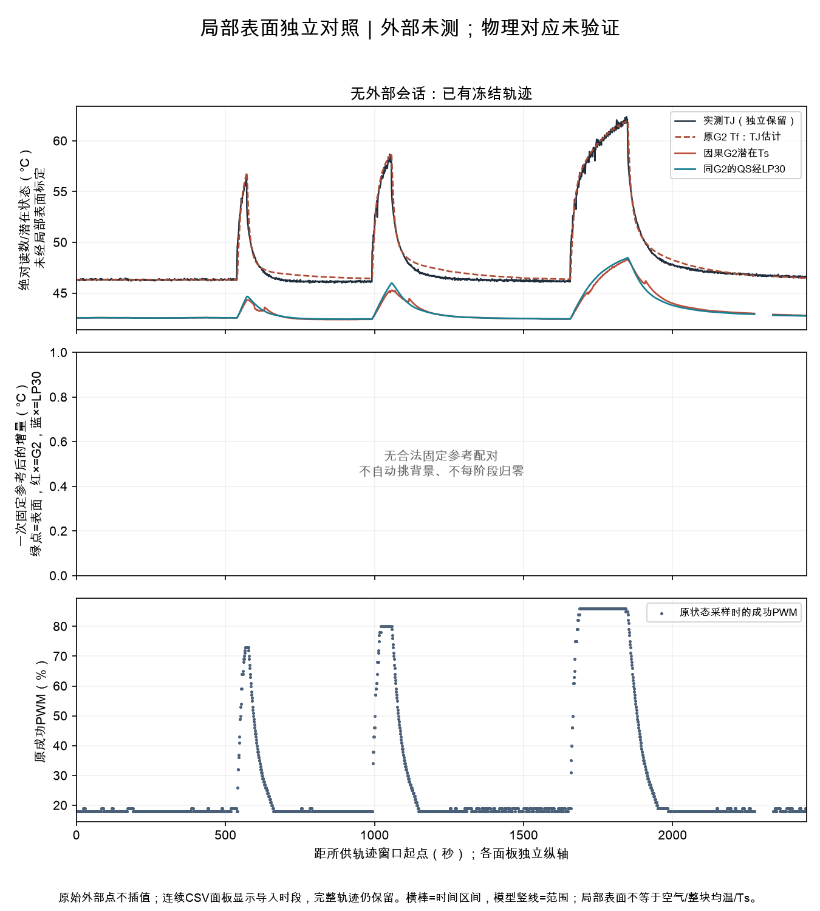

未导入外部数值记录；现有遥测、冻结状态和覆盖仍可读取。
数值点0；声明为外部测量的数值点0；合成点0；配对点0。n是记录点，不是独立试验。
尚无真实YET-610L样例验收回执；通用导入不代表厂商格式已验收。
输入类别不证明品牌、校准或现场来源；仪表精度、探头安装/响应及表面与Ts的物理对应未验证。
三种时钟与写入记录分开；普通伪彩图不做数值解码。局部表面不等于Ts，外部点不进入模型；空测温不阻挡其他软件/建模。

| 记录 | 会话/测点 | 被测对象 | 表面读数°C | 原始测量时间 | 配对资格 | 固定参考温升°C | 限制 |
|---|
未配对原因：无
稀疏点不能证明完整峰值、秒级时滞或物理热容；未联网设备、未改变控制。完整模型取值范围、源引用及限制见paired-points.jsonl。